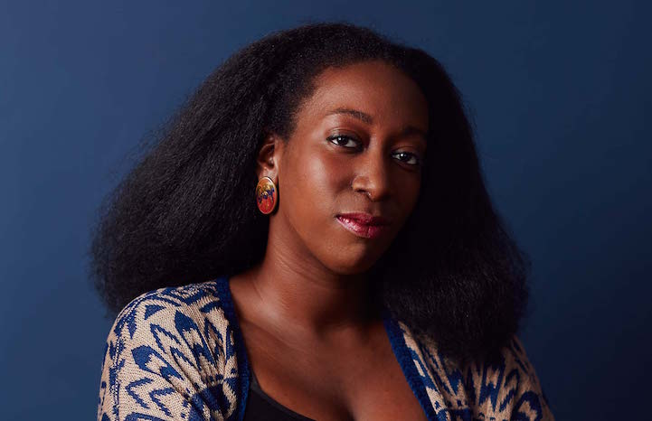

Audience Persona
 KIONI MWANGI Occupation: Television Titles Designer Workplace: Oily Film Company, Los Angeles Age: 37 Sex: FKioni Mwangi is a Los Angeles-based designer who makes $68,000 a year designing film titles for a specialized design studio. Her role mainly consists of bringing television show titles to life from conception to execution. She works with a team of mostly white men who often speak over her. As a Kenyan-born African-American, she feels her voice is lost as a designer, despite having an accomplished portfolio of impressive work as well as an educational background at Carnegie Mellon University. As a mother of two younger kids, she finds it difficult to find time to balance her passion for her work and taking care of her family life – this leaves her little time for self promotion and marketing, making her work further lost in the depths of the increasingly tech-focused and social media-conscious design world. Mwangi stays on top of design news and sites that show off designers' works, but much of that information doesn't apply to her. In addition, the content is written in a way that she can't relate to, as a woman who wasn't born into privilege like the creators of those news articles and works often are. She feels that her skill as a motion designer is not represented or shown off, but cannot find an inclusive platform to do so without excessive effort and persuasion.